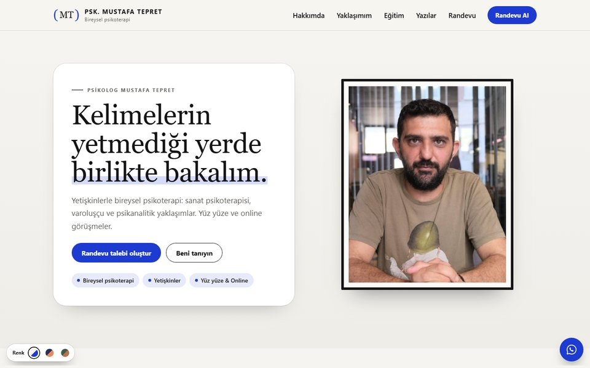
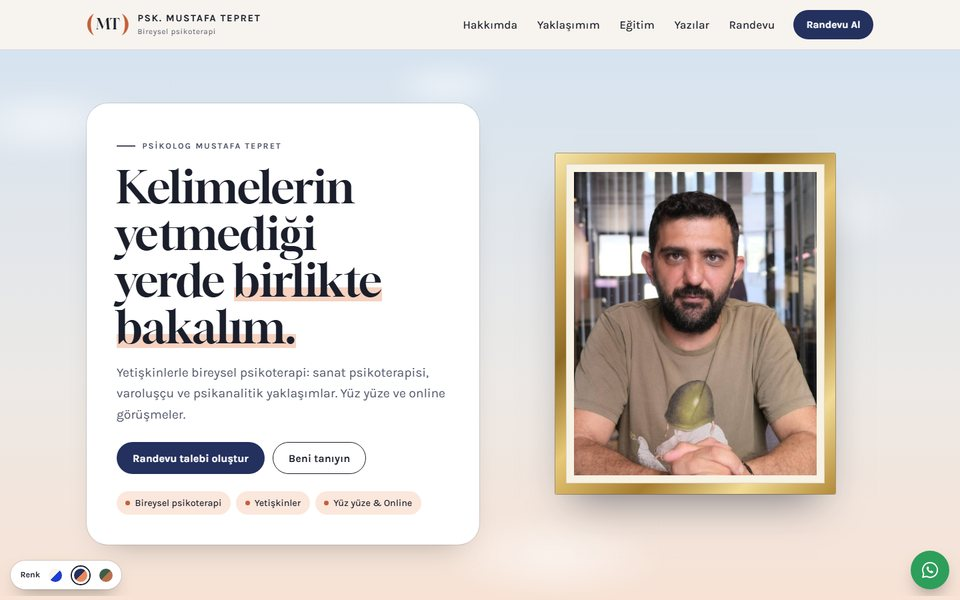
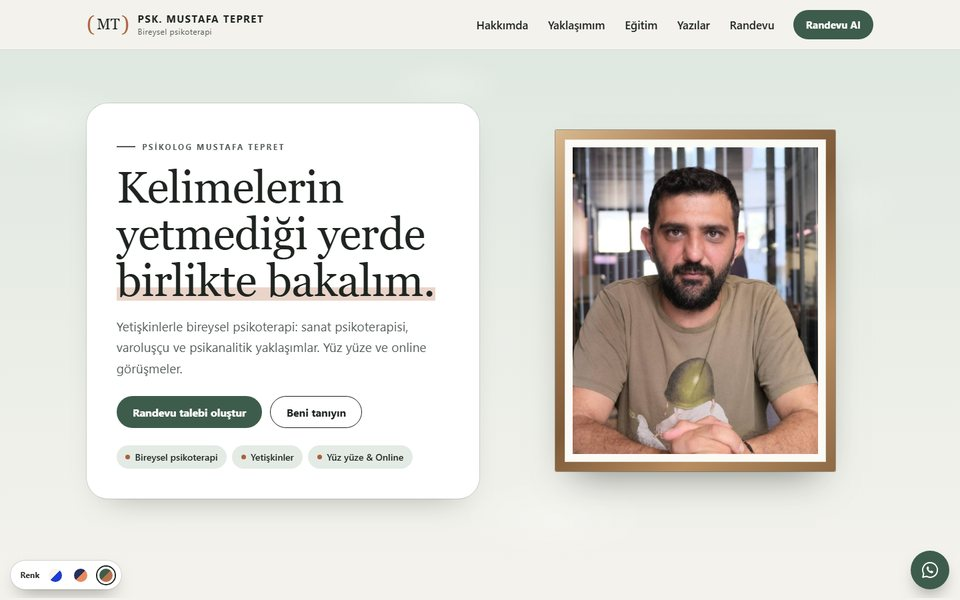

Renk 1
Kâğıt & Klein mavisi
İstediğiniz: 1. tasarımın renkleri
Kırık beyaz zemin, siyah yazı ve Klein mavisi vurgular. Çerçeveler ince ve siyah; en sade ve en çağdaş seçenek.
Bu seçeneği aç
Renk 2
Lacivert & kayısı
Beğendiğiniz canlı gökyüzü ve gün batımı sıcaklığını koruyan, daha sakin bir lacivert. Altın çerçeveler galeri havasını sürdürüyor.
Bu seçeneği aç
Renk 3
Adaçayı & kil
Toprak tonları: adaçayı yeşili, kil turuncusu ve ahşap çerçeveler. Doğal, sıcak ve sakinleştirici bir seçenek.
Bu seçeneği açBu turda yapılanlar
- Ad, unvan, iletişim bilgileri ve çalışma saatleri eklendi
- Logo tasarlandı: (MT). Parantez, “epokhe”ye (paranteze alma) bir gönderme
- “Hangi konularda destek olabilirim” bölümü kaldırıldı
- Üç yaklaşımda yalnızca isimler bırakıldı
- “Süreç nasıl işliyor”, seans süresi ve sıklığı kaldırıldı
- Ücret ile ilgili ifade kaldırıldı
- Mesleki üyelikler eklendi: Türk Psikologlar Derneği, TODAP
- Online randevu talebi eklendi: gün ve saat seçimi, WhatsApp ile iletim
- Yazılar bölümü “yakında” olarak bırakıldı ve Instagram’a bağlandı
- KVKK aydınlatma metni ve çerez politikası taslağı hazırlandı
Yeni fotoğraflarınız (portre, ofis ve terapi odası) geldiğinde mevcut fotoğrafların yerine konacak.